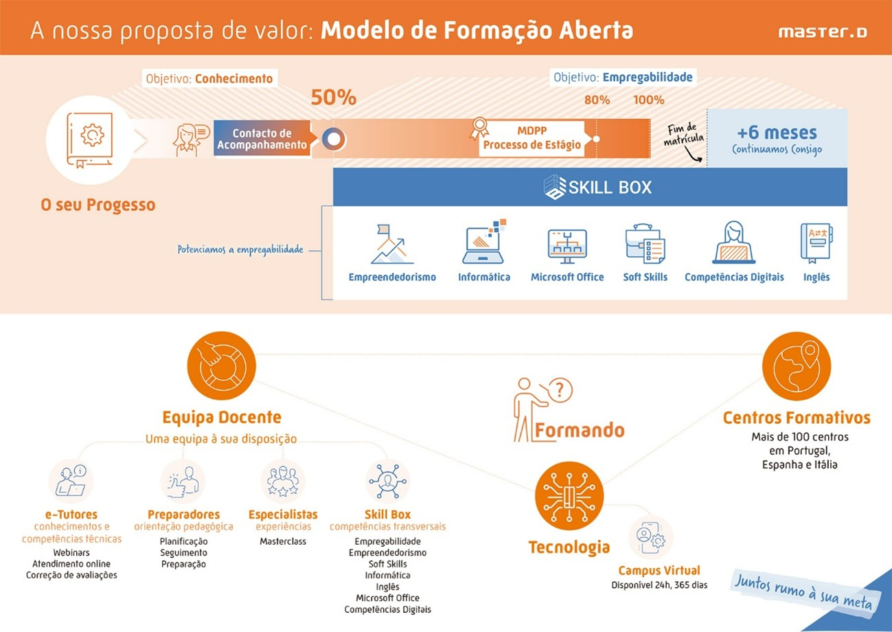

Acompanhamos o formando em cada etapa do seu percurso — do primeiro conteúdo ao primeiro emprego.
Para que os nossos formandos sejam competitivos e alcancem os seus objetivos, devem adquirir os conhecimentos necessários, treinar as habilidades e desenvolver as competências que os farão destacar-se de outros candidatos. Para isso, vamos acompanhá-lo ao longo de todo o processo formativo.
O seu itinerário formativo está planeado para que possa realizá-lo no tempo estabelecido, com marcos claros e suporte contínuo da nossa equipa.
Numa primeira fase, até atingir 50% de progresso, o nosso objetivo centra-se na aquisição dos conhecimentos e habilidades mínimos necessários para construir uma base sólida.
Chegou o momento, sem deixar de lado os conhecimentos, de nos concentrarmos também na empregabilidade. Ao atingir 80% do seu progresso, poderá aceder ao mercado de trabalho através da solicitação de um estágio formativo.
Ao concluir a sua matrícula, continuaremos consigo por mais seis meses para que possa continuar a formar-se com os complementos do espaço Skill Box.

Colocamos o formando no centro de três pilares fundamentais que garantem uma aprendizagem eficaz e orientada para o mercado de trabalho.
Colocamos à sua disposição toda uma equipa de profissionais para lhe proporcionar os conhecimentos e as competências necessários.
Os e-tutores da área, os especialistas do setor e a própria comunidade de formandos são peças fundamentais no seu processo de aprendizagem.
Os nossos centros formativos permitem-nos realizar um acompanhamento presencial, trabalhando competências em grupo com workshops e práticas.
Num curso 100% online, são os seus orientadores que farão esse acompanhamento e potenciarão o desenvolvimento das competências.
A nossa plataforma de aprendizagem reúne todos os conteúdos essenciais para uma formação sólida, eficaz e orientada para o sucesso.
Avance no progresso, entre em contacto com a equipa docente, participe em sessões online e planeie o estudo — disponível a qualquer hora e em qualquer dispositivo.
Do primeiro módulo ao primeiro emprego, a MasterD acompanha-o em cada passo. Não apenas o formamos — orientamos o seu percurso até atingir o seu objetivo profissional.